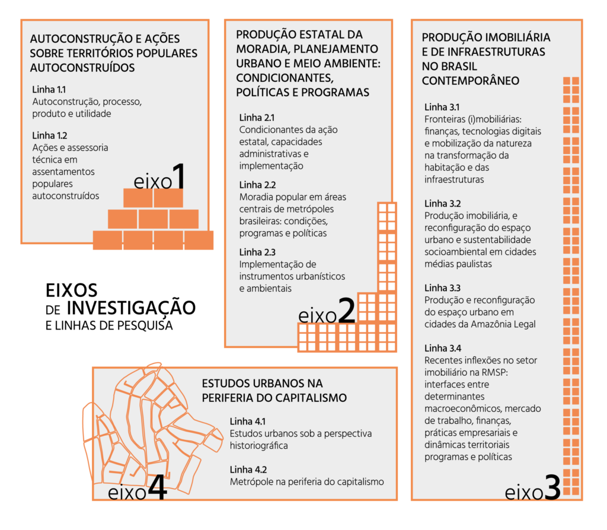

Questão central
A partir das pesquisas e análises elaboradas desde 1979, data da edição do livro clássico “A Produção Capitalista da Casa (e da cidade) no Brasil Industrial”, organizado por Ermínia Maricato e com prefácio de Francisco de Oliveira, bem como do diagnóstico de um impasse da política urbana no país, é fundamental articular as análises e as avaliações dos diversos programas e políticas executadas desde então. Tal esforço busca superar soluções de política urbana e habitacional que, forjadas a partir de um diagnóstico calcado em um Brasil industrial, já não produzem os efeitos desejados em um contexto de atual desindustrialização, reprimarização da pauta exportadora e dominância financeira.
O papel do planejamento centralizado e o milagre brasileiro da década de 70 transformaram definitivamente as cidades brasileiras, aprofundando processos já iniciados de metropolização, com intenso crescimento da população urbana por meio de migração e ampliação das periferias urbanas. Em termos analíticos, o conceito de espoliação urbana cunhado por Lúcio Kowarick já demonstra a importância teórica que o momento teve para a compreensão das profundas mudanças pelas quais passava o território brasileiro tanto o urbano quanto o rural.
O padrão de acumulação que se apresentava ao país à época foi atingido pela alta do preço do petróleo e do choque dos juros estadunidenses. No processo político, a abertura programada pelo Presidente Geisel baseou-se na manutenção do pacto das elites, ensejando uma transição sem rupturas. Tal processo de distensão conviveria, porém, com um aumento crescente das reivindicações populares, seja pela redemocratização do país, seja por políticas públicas de caráter social. Assim, ainda que o crescimento do movimento popular de reivindicação não tenha impedido a transição imaginada pelos donos do poder, pode-se entender que ela marcou fortemente a Nova República e a intervenção do Estado nas políticas sociais.
A natureza efetiva dessa transição negociada pode ser observada em retrospecto na Nova República, fazendo hoje muito mais sentido em face de como foram encaminhadas as questões sociais e as políticas e programas formulados para mitigá-las. Em muitos relatórios, planos de governo e grupos de estudo a questão da descentralização administrativa aparecia como verdadeira panaceia para as questões sociais prementes na época. A forte centralização do sistema anterior conseguiu ser sinônimo de um modo de governar anacrônico e incapaz de atender as necessidades do Brasil. Certamente, adotar a questão da descentralização administrativa como cerne dos males trouxe confusão entre os conceitos de participação direta, democratização e descentralização.
É deste momento o movimento da Reforma Urbana tão estudado e que encontra seu impasse nas políticas e programas atuais, segundo a literatura. Ainda é possível focalizar programas e políticas urbanas nos instrumentos urbanísticos e em especial no plano diretor estratégico? O que as pesquisas de estudo de caso, em perspectiva comparada, conduzidas em municípios de diferentes características mostram sobre a implementação desses instrumentos?
A expansão horizontal da RMSP, retratada no livro de 1979, é a marca da espoliação urbana necessária para a urbanização de baixos salários. No entanto, apesar de ser apontada como um processo geral do país, não são todas as capitais que se urbanizam dessa forma nesse momento. Afinal, é justamente a característica de polarização e centralização do milagre econômico que a industrialização de baixos salários pode se desenvolver.
Os municípios do que hoje conhecemos como as novas frentes de expansão agrícola, em um Brasil reprimarizado, ali, no momento das pesquisas que resultaram no livro, estavam perdendo população ou mantinham-se na matriz produtiva de agricultura e pecuária de baixa intensidade.
A gramática analítica dos anos 1970 assentava as reflexões sobre a produção do espaço na centralidade do trabalho e na relação Estado/capital e suas tentativas de criar um ajuste espacial funcional ao processo de acumulação. Decorria do diagnóstico uma agenda social-democrata de mudança do estatuto do trabalho na sociedade e na redemocratização do Estado com aumento da permeabilidade das políticas às reivindicações dos trabalhadores organizados (em sindicatos e movimentos sociais). Assim, se essa gramática foi potente como inaugural de um campo de estudos, é importante compreender o esgotamento do modelo e, mais do que isso, sua insuficiência para a análise dos problemas contemporâneos.
Importante reconhecer a importância da agenda positiva como instrumento de organização e conquistas significativas e incrementais, mas é igualmente importante identificar a insuficiência da política urbana instrumental como política pública na promoção de um espaço urbano reformado e dentro do contexto pós-industrial e de reconfiguração de uma economia de enclave.
Como se dá na contemporaneidade a urbanização nessas novas frentes de expansão agrícola? Quais as conexões com as metrópoles nacionais em um contexto de capitalismo financeirizado no qual o país se insere? Conhecer e analisar as características dessa urbanização com base em evidências empíricas e ciência de dados é um dos principais objetivos do INCT.
Após 35 anos da Constituição Federal, pouco mais de 20 de Estatuto da Cidade, e a configuração de uma economia menos industrial, mais agrária e de serviços, cabe um momento de balanço de pesquisas realizadas, de avaliação de resultados e impactos e sistematização e de elaboração de investigações prospectivas.
Estrutura do INCT:
O INCT Produção da Casa e da Cidade se desdobra em um conjunto de eixos de investigação e linhas de pesquisa, articulados entre si. Os primeiros três eixos abordam as formas de produção da casa e da cidade: a autoconstrução e a produção doméstica, as iniciativas estatais e a produção imobiliária privada. O quarto eixo procura aprofundar o campo dos estudos urbanos a partir dessa perspectiva. Esses quatro eixos de investigação, por sua vez, se articulam em onze linhas de pesquisa:
